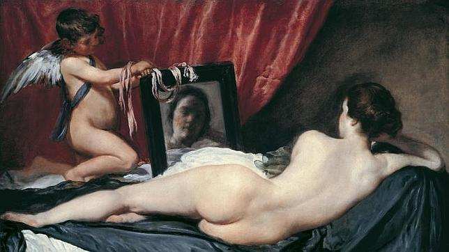

Representantes:
- Lenardo Da Vinci
Leonardo da Vinci (Leonardo di ser Piero da Vinci) (Vinci, 15 de abril de 1452-Amboise, 2 de mayo de 1519) fue un polímata florentino del Renacimiento italiano. Fue a la vez pintor, anatomista, arquitecto, paleontólogo, artista, botánico, científico, escritor, escultor, filósofo, ingeniero, inventor, músico, poeta y urbanista. Murió acompañado de Francesco Melzi, a quien legó sus proyectos, diseños y pinturas. Tras pasar su infancia en su ciudad natal, Leonardo estudió con el célebre pintor florentino Andrea de Verrocchio. Sus primeros trabajos de importancia fueron creados en Milán al servicio del duque Ludovico Sforza. Trabajó a continuación en Roma, Bolonia y Venecia, y pasó los últimos años de su vida en Francia, por invitación del rey Francisco I. |
Obras o creaciones:
- Pablo Picasso
Pablo Ruiz Picasso, arquetipo de «el artista», genio, vital, follador…, creador de estilos, una leyenda ya en vida (que él contribuyó a forjar) y sin duda alguna, uno de los más grandes artistas de la historia.
Dejó huella en cada una de sus múltiples etapas de sus períodos azul, rosa o blanco y negro, al cubismo que inventó, después al surrealismo, a la abstracción… y por este inconmensurable talento junto a su ingente producción estamos ante el artista más famoso de la historia del arte. |
Obras o creaciones:
- Guernica
- La Mujer que Llora
- Vicente Van Gogh
Desarrolló un estilo artístico particular realizado con colores vivos y cálidos y el cual se desata del estilo impresionista. Con su estilo, se volvió, junto a Gauguin, Cézanne y Munch, uno de los precursores del fovismo y del expresionismo. Aunque haya vivido en una miseria casi total y dependía financieramente de su hermano, sus obras son unas de las más conocidas y caras del mundo hasta hoy en día |
Obras o creaciones:
- La noche Estrellada
- Trigal con cuervos
- Diego Velazquez
Fue el pintor barroco español más importante del grupo porque trató con igual excelencia todos los géneros: religiosos, mitológicos, retratos, históricos, paisajes, bodegones,ademas de ser, indiscutiblemente, uno de los mejores artistas de todos los tiempos; Se trata de una época en la que el estilo artístico que reina es el Barroco, que ha llegado a España desde Italia. |
Obras o creaciones:
- Las Meninas
- Venus del Espejo
 |
 |
| | | | |